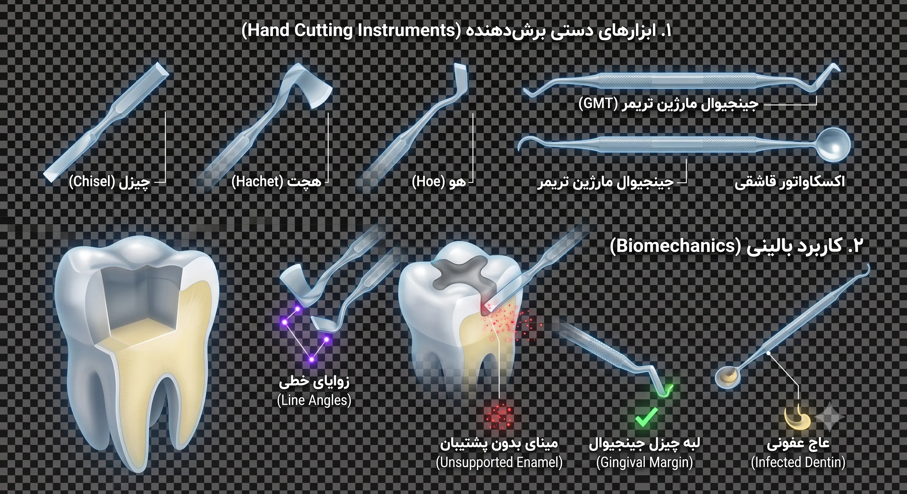
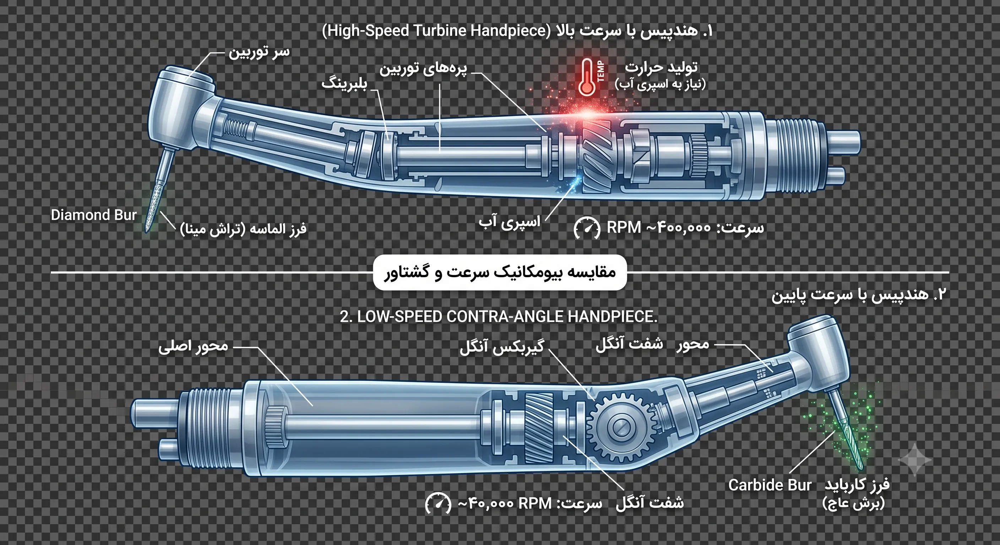
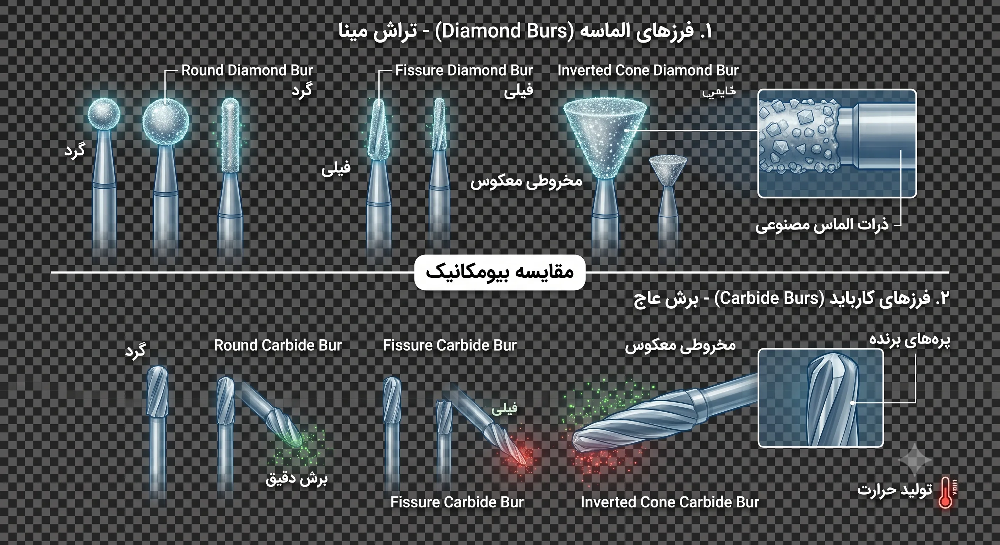

نسخه استخراجشده؛ ترجمه یا تأیید علمی انجام نشده است. وضعیت: captured
فلسفه ابزارهای دستی: اگرچه ابزارهای چرخشی (توربین) سرعتِ کار را بالا میبرند، اما نهاییسازیِ دقیقِ حفره همچنان نیازمندِ ظرافتِ ابزارهای دستی است.
🔑 کاربردهای کلیدی بالینی :
برداشت مینای بدون پشتیبان:چیزل (Chisel) و هچت (Hachet) ابزارهای اختصاصی برای خرد کردن و برداشتن مینای ضعیف در دیوارهها ایده آل هستند. تفاوت در جهت برش آنها نسبت به دسته است.
نهاییسازی دیوارهها و زوایا:هو (Hoe) برای صاف کردن کف حفره و هچت برای تیز کردن زوایای خطی و نقطهای (Line & Point Angles) جهت گیر آمالگام استفاده میشوند.
پخزدن مارژین جینجیوال:جینجیوال مارژین تریمر (GMT) ابزاری اختصاصی برای ایجاد بیول (پخ) در مارژینِ لثهای حفرات کلاس II است تا از شکستگی منشورهای مینایی جلوگیری شود.
برداشت پوسیدگی نرم:اکسکاواتور قاشقی (Spoon Excavator) برای "قاشق کردن" و برداشتن عاجِ عفونیِ نرم از کف حفره به صورت دستی، بدون خطر اکسپوز پالپ، استفاده میشود.

ابزارهای چرخشی قلبِ عملیاتیِ دندانپزشکی ترمیمی هستند که بر اساس سرعت و گشتاور (Torque) به دو دسته اصلی تقسیم میشوند :
هندپیس با سرعت بالا (High-Speed / Turbine):
سرعت: فوقالعاده بالا ($~400,000$ دور در دقیقه / RPM) و گشتاور پایین.
کاربرد: عمدتاً برای تراشِ اولیه و سریعِ مینای سخت و حذفِ ترمیمهای قدیمی (تصویر ۳۶).
نکته کلیدی: به دلیل سرعت بالا، اصطکاک و حرارتِ شدید تولید میکند (التهاب پالپ)؛ بنابراین استفاده از اسپریِ آبِ مداوم و کافی حیاتی است.
هندپیس با سرعت پایین (Low-Speed / Contra-angle):
سرعت: پایین ($~40,000$ دور در دقیقه / RPM) و گشتاور بالا.
کاربرد: برای حذفِ عاجِ پوسیدهیِ نرم (عاج عفونی) توسط فرزهای بزرگ، پرداختِ ترمیمها و نهاییسازیِ حفره.
نکته کلیدی: گشتاورِ بالا اجازه میدهد فرز بدونِ متوقف شدن در عاجِ نرم نفوذ کند و کنترل بالایی به دندانپزشک میدهد.

انتخابِ نوعِ فرز بر اساس بافتی که قرار است تراشیده شود، شرطِ اصلیِ کارایی و ایمنی است :
فرزهای الماسه (Diamond Burs):
ساختار: ذراتِ الماسِ صنعتی (تولید مصنوعی) که روی یک داربستِ فلزی چسبانده شدهاند .
مکانیسم: این فرزها با سایش (Abrasion) بافت را میتراشند.
کاربرد: ایده آل برای تراشِ مینای سخت دندان. به دلیل اصطکاک بالا، حرارت زیادی تولید میکنند و نیاز به آب فراوان دارند.
فرزهای کارباید (Carbide Burs):
ساختار: از جنس تنگستن کارباید سخت ساخته شده و دارای پرههای برنده (Cutting Flutes) هستند.
مکانیسم: این فرزها با برش (Cutting) بافت را میبرند (تراشِ تمیزتر و حرارتِ کمتر).
کاربرد: ایده آل برای تراشِ عاج دندان. همچنین برای برداشتن آمالگام قدیمی یا پرداختِ ترمیمها استفاده میشوند.
